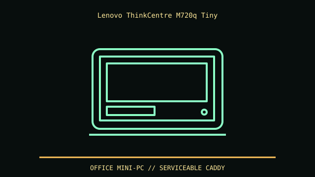

[ IDENTIFIED ENCLOSURE // THINKCENTRE M720Q TINY (MACHINE TYPE 10T7) ]
Lenovo ThinkCentre M720q Tiny
179 × 183 × 34.5 mm (W × D × H), compact Tiny chassis. Lenovo stand/VESA mounting changes required screw and ventilation clearance.

REVISION / FIT CAVEAT: M720q Tiny differs from M720s SFF and M920q. Machine type 10T7 and PSREF configuration specify adapter, riser, storage cage and VESA hardware.
Model-specific mechanical record
| Catalog leaf | Office and mini-PC enclosures |
|---|---|
| Identity / generation | ThinkCentre M720q Tiny (machine type 10T7) |
| Dimensions / clearance | 179 × 183 × 34.5 mm (W × D × H), compact Tiny chassis. Lenovo stand/VESA mounting changes required screw and ventilation clearance. |
| Drive bays / mounts | One optional 2.5-inch SATA drive position plus M.2 SSD support; cable/caddy are configuration/accessory dependent. No standard expansion bay. |
| Board / chassis compatibility | Proprietary Tiny board, external Lenovo adapter, optional riser for low-profile card on some configurations. This is not Mini-ITX; machine type specifies supported options. |
| Revision identification | M720q Tiny differs from M720s SFF and M920q. Machine type 10T7 and PSREF configuration specify adapter, riser, storage cage and VESA hardware. |
Compatibility and preservation
Proprietary Tiny board, external Lenovo adapter, optional riser for low-profile card on some configurations. This is not Mini-ITX; machine type specifies supported options.
Retain optional drive cage, SATA cable, riser and VESA screws; fan and vent path are easy to obstruct behind displays. Record machine type and PSU wattage before parts transfer.
Before transfer or restoration, photograph the complete model label, assembly/board revisions, bay/backplane identifiers and included accessories. Measure the actual specimen when planning installation or shipping; nominal envelope figures may exclude protruding feet, rails, doors or cables.
Manufacturer manuals and archival sources
- Lenovo PSREF — ThinkCentre M720 Tiny (MT 10T7)Model-specific manufacturer specification, service manual, or technical reference used for the listed dimensions and mechanical configuration.
- Lenovo M720 Tiny product datasheetSupplemental model documentation or institutional/technical archival record; use the exact product code and manual revision for a specimen.
Listings distinguish base configuration from optional drive, PSU, fan, rack and accessory kits. Do not combine maximum capacities if cages or components occupy the same volume.